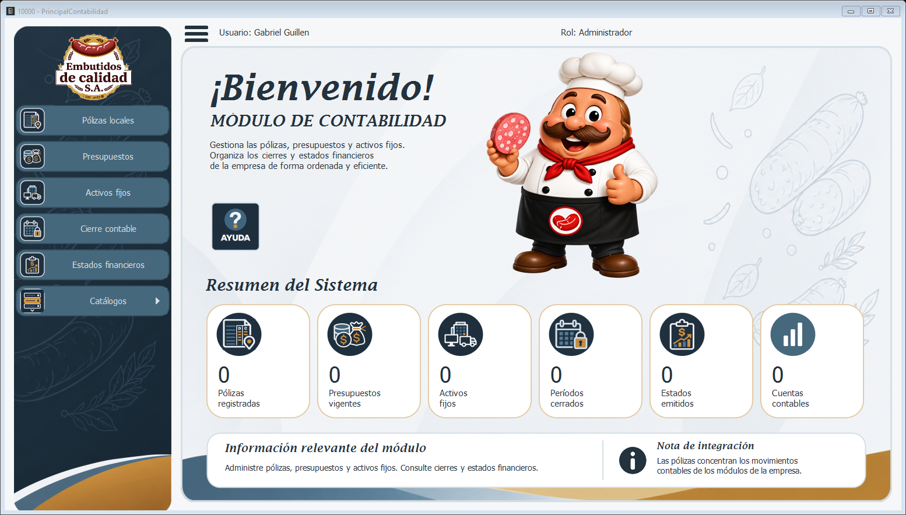

Es la ventana principal del módulo de Contabilidad. Se abre desde el inicio de sesión de Seguridad y muestra el usuario, su rol, los accesos a cada pantalla del módulo y un resumen con los datos más importantes.

Pólizas locales: lista de pólizas, captura y actualización de saldos (10001).
Presupuestos: presupuestos del período y su ejecución por módulo (10002).
Activos fijos: registro y depreciación de los activos de la empresa (10003).
Cierre contable: revisión y cierre del período (10004).
Estados financieros: balance general, estado de resultados y flujo de caja (10005).
Catálogos: despliega Países, Módulos contables, Vida útil, Cuentas contables y Cuentas por módulo (10011 a 10015).
Solo se habilitan los botones de las aplicaciones a las que el perfil del usuario tiene acceso.
El botón de tres líneas oculta o muestra el menú lateral para dar más espacio a la ventana abierta. A la derecha se ven el usuario que inició sesión y su rol.
Las seis tarjetas muestran las pólizas registradas, los presupuestos vigentes, los activos fijos, los períodos cerrados, los estados emitidos y las cuentas contables. Se actualizan cada vez que se abre el MDI.
El botón Ayuda abre este manual.